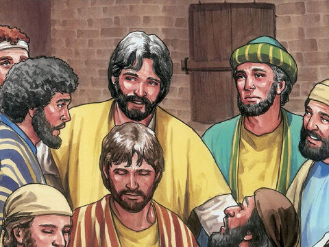
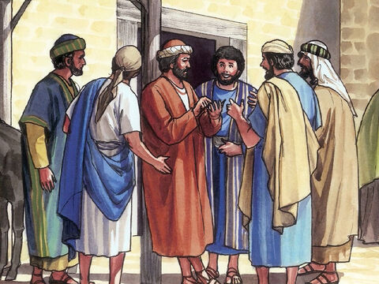
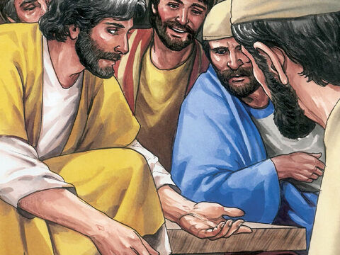
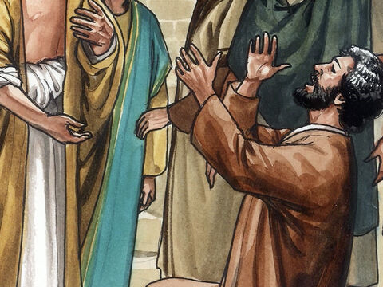
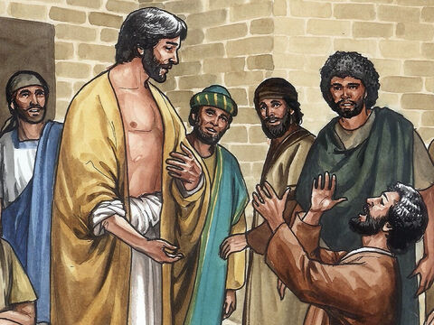

Lord Jesus Appears To His Disciples
And as they thus spake, Jesus himself stood in the midst of them, and saith unto them, Peace be unto you.
But they were terrified and affrighted, and supposed that they had seen a spirit.
And he said unto them, Why are ye troubled? and why do thoughts arise in your hearts?
Behold my hands and my feet, that it is I myself: handle me, and see; for a spirit hath not flesh and bones, as ye see me have.
And when he had thus spoken, he shewed them his hands and his feet.
And while they yet believed not for joy, and wondered, he said unto them, Have ye here any meat?
And they gave him a piece of a broiled fish, and of an honeycomb.
And he took it, and did eat before them.
And he said unto them, These are the words which I spake unto you, while I was yet with you, that all things must be fulfilled, which were written in the law of Moses, and in the prophets, and in the psalms, concerning me.
Then opened he their understanding, that they might understand the scriptures,
And said unto them, Thus it is written, and thus it behooved Christ to suffer, and to rise from the dead the third day:
And that repentance and remission of sins should be preached in his name among all nations, beginning at Jerusalem.
And ye are witnesses of these things.
And, behold, I send the promise of my Father upon you: but tarry ye in the city of Jerusalem, until ye be endued with power from on high.
Luke 24:36-49
But Thomas, one of the twelve, called Didymus, was not with them when Jesus came.
The other disciples therefore said unto him, We have seen the Lord. But he said unto them, Except I shall see in his hands the print of the nails, and put my finger into the print of the nails, and thrust my hand into his side, I will not believe.
And after eight days again his disciples were within, and Thomas with them: then came Jesus, the doors being shut, and stood in the midst, and said, Peace be unto you.
Then saith he to Thomas, Reach hither thy finger, and behold my hands; and reach hither thy hand, and thrust it into my side: and be not faithless, but believing.
And Thomas answered and said unto him, My Lord and my God.
Jesus saith unto him, Thomas, because thou hast seen me, thou hast believed: blessed are they that have not seen, and yet have believed.
John 20:24-29

- 
- 
- 
- 
- 